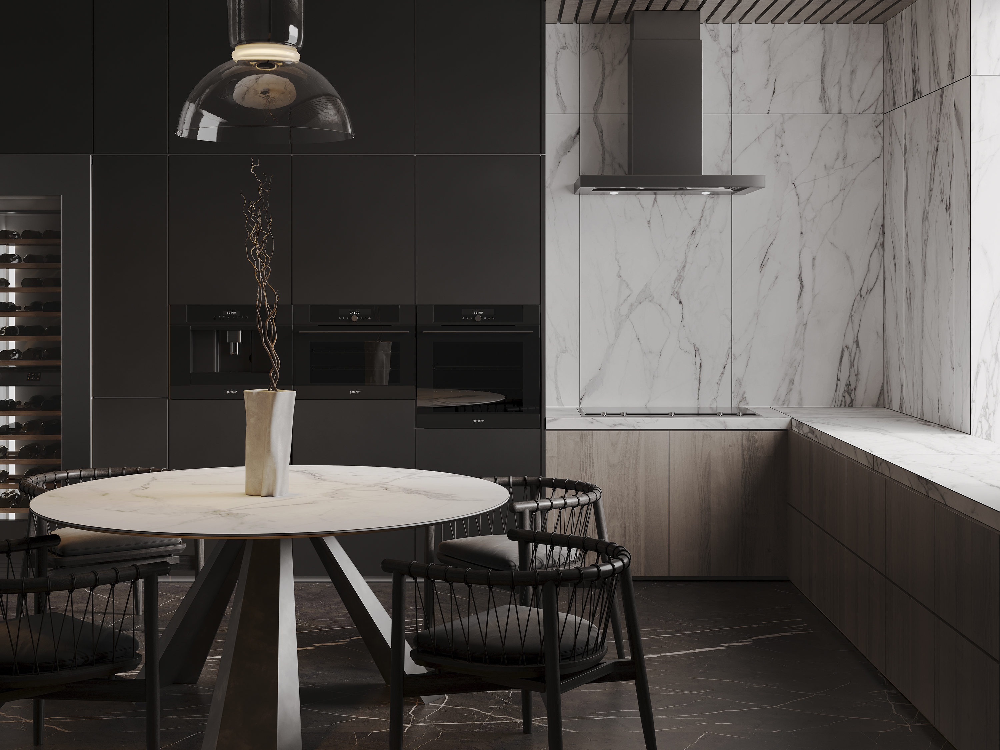
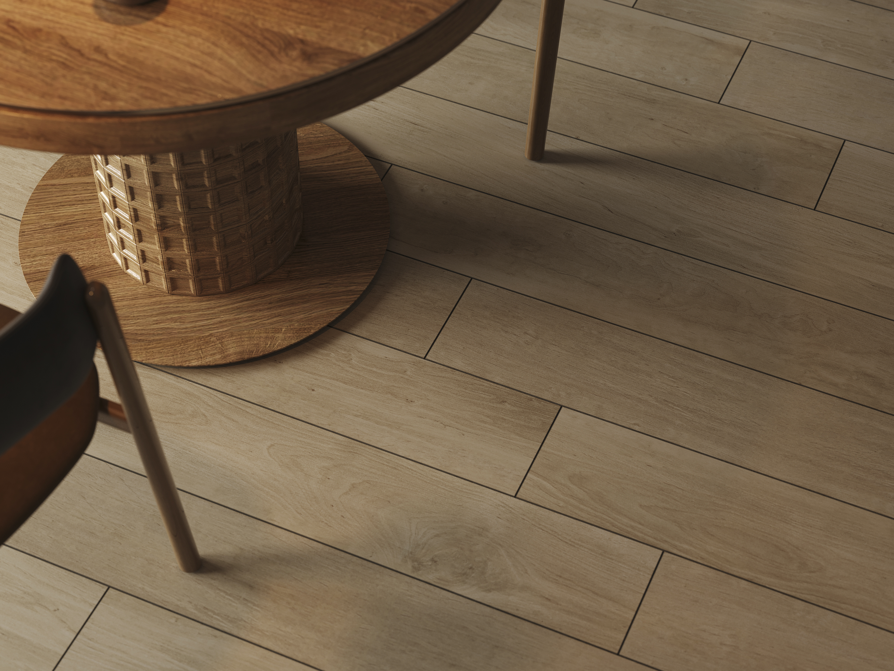
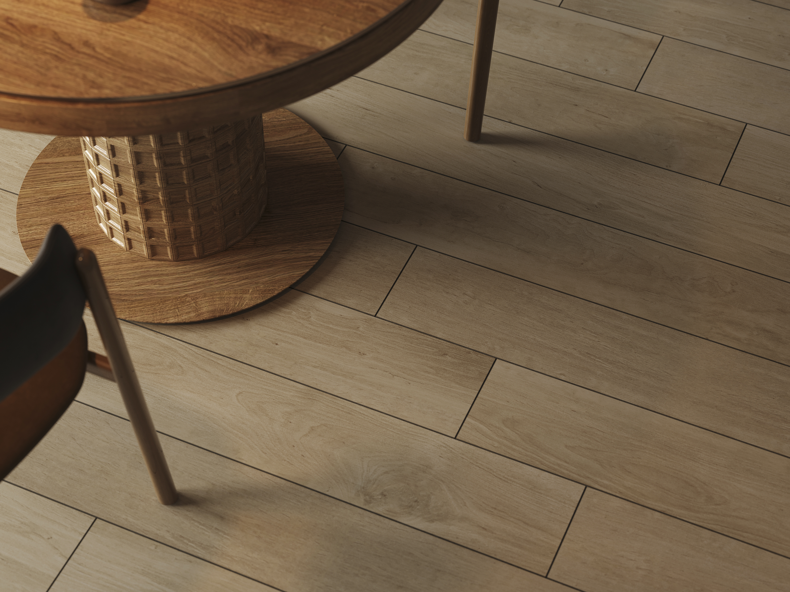

Мои проекты





×

Тёмная элегантность
Описание проекта: Тёмная элегантность — это интерьер, сочетающий в себе современные тенденции и классические элементы.
×


Эстетичная кофейня
Описание проекта: Эстетичная кофейня с минималистичным дизайном и атмосферой.
×

Современный санузел в серых тонах
Описание проекта: Современный санузел в серых тонах и акцентной стеной с пликтой в виде hexagon.
×

Солнечное место
Описание проекта: Солнечное место - просто почувствую эту атмосферу в момент утреннего кофе.
Обо мне

Привет! Меня зовут Георгий, и я профессиональный 3D-визуализатор с опытом более 5 лет. Я специализируюсь на создании реалистичных интерьеров и архитектурных визуализаций. За это время я успел поработать с более чем 50 проектами, включая жилые и коммерческие пространства.
- 🎨 3ds Max + Corona Renderer
- 🖼️ Фотореалистичная визуализация
- ✏️ Постобработка в Photoshop
Связь со мной
Если у вас есть вопросы или вы хотите обсудить проект, напишите мне в Telegram:
✈️ Написать мне в Telegram